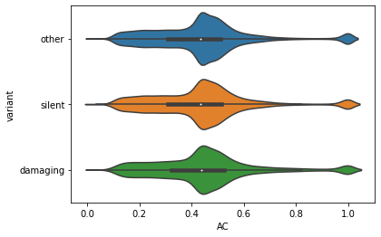

Cancer Cell Line Encyclopedia Mutation Characterization
DepMap Readme
Genes:18784
Cell Lines:1759
Primary Diseases:35
Lineages:38
Source: Broad Institute
LINCS Coverage
original # obs: 1269999
# obs lost converting to ensembl id: 62221
# of obs lost converting to cell_iname: 995092
final # obs: 212686
Of the total cell lines in LINCS (n=239), 138 of them have CCLE expression data including the same 133 that have CCLE expression data.
Reactome FI Coverage
After we map the 212,686 mutations (from above), to the covered Reactome FI gene nodes we have a 164,886 remaining mutations (78%).
Encoding
We will focus on two features of this dataset: Variant Annotation and Allelic Ratio (AC).
Feature encoding: Allelic Ratio
There are several options to use for allelic ratio, all specified with a _AC suffix. Due to missingness in the data, we will aggregate info from 3 sources (in order of confidence):
CGA_WES_AC: the allelic ratio for this variant in all our WES/WGS(exon only) using a cell line adapted version of the 2019 CGA pipeline that includes germline filtering.
RNAseq_AC: in Broad RNAseq data from the CCLE2 project (legacy)
SangerWES_AC: in Sanger WES (called by sanger) (legacy)
Our primary AC source (CGA_WES_AC) has ~22% missingness. All AC values are recorded as strings in the form ALTERNATE:REFERENCE, which we transform into a ratio using the function:
To ensure that these datatypes are concordant and interchangable, see the figure below for correlation of AC values.
We then aggregate AC values using the logic:
ACis equal toCGA_WES_ACif it's not Nan
otherwise equal toRNAseq_ACif it's not Nan
otherwise equal toSangerWES_ACif it's not Nan
otherwise equal tomeanof allCGA_WES_ACvalues (~0.5)
Final AC distribution can be seen in the figure below.

Feature Encoding: Variant Annotation
Feature name: Variant_annotation
There was no Depmap information available on this feature; however, I was able to find some insight from a biostars thread:
[A. Domingues] "Got the answer in the Forum of DepMap (closed access). I am pasting here the crucial part of the answer. If any one from DepMap has an issue with it, I am happy to remove it:
We use Oncotator to annotate the mutations. The output of this tool is stored in the ‘Variant_Classification’ column of the mutation maf file The Variant_annotation column in the CCLE_mutations.csv MAF file
We have added a Variant_annotation column in the DepMap mutation data, CCLE_mutations.csv 4, which groups mutations using more inclusive definitions. The Variant_annotation column labels a mutation as “damaging”, “other non-conserving”, “other conserving” or “silent” using the Variant_Classification column and the definitions below."
Oncotator information here.
This feature has 4 categories as seen in the table below.
Category count
------------------------------
other non-conserving 125327
silent 53541
damaging 33618
other conserving 200
Since the category other conserving has relatively few observations associated with it, we will merge it with other non-conserving and relabel them as other.
The final 3 categroical labels will be:
Category count
------------------------------
other 125527
silent 53541
damaging 33618
These labels will then be one-hot encoded. The final output for this datatype will be a 4 dimensional feature for each gene in our network, which will be zero if a given cell line does not have mutation in that gene, otherwise:
mut_features = [other_bool, silent_bool, damaging_bool, AC]
Where _bool indicates binary values. AC will be a float between 0-1.
Variant Annotation vs Allelic Ratio
To double check that we're not encoding redundant information, we checked the distribution of AC values for each variant annotation, see figure below.

Implementation
mut = gnn_cdr.depmap.load_ccle_mut()
mut dataframe head:
ensembl cell_iname variant AC
--------------------------------------------------------
ENSG00000008128 HL60 other 0.237762
ENSG00000142611 HL60 other 0.531646
ENSG00000179163 HL60 other 0.454545
ENSG00000126705 HL60 other 0.512195
ENSG00000162526 HL60 silent 0.440860
To get an individual cell line's mutation features:
obs = gnn_cdr.depmap.get_cell_line_ccle_mut(mut, cell_line='HL60', genelist=nodelist_fi, variant_encoding=['other', 'silent', 'damaging'])
shape(obs)
output:
(13609, 4)
References
-
DepMap, Broad (2022): DepMap 22Q1 Public. figshare. Dataset. https://doi.org/10.6084/m9.figshare.19139906.v1
-
Mahmoud Ghandi, Franklin W. Huang, Judit Jané-Valbuena, Gregory V. Kryukov, ... Todd R. Golub, Levi A. Garraway & William R. Sellers. 2019. Next-generation characterization of the Cancer Cell Line Encyclopedia. Nature 569, 503-508 (2019).